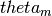
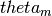
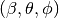

Differential scattering cross section¶
GGADT by default will produce an orientation-averaged, 1-dimensional result for  for a set of  determined by either the dtheta parameter or the nscatter parameter.
for a set of  determined by either the dtheta parameter or the nscatter parameter.
Orientation averaging¶
GGADT has three methods for producing averages over orientations, all of which are set by the angle-mode parameter.
- random
- GGADT will chose norientations random orientations
- sequential
- GGADT will choose norientations, evenly spaced over .
- file
GGADT will read in file; each line contains three floating point numbers, representing (if axes-convention=ddscat), or
 if axes-convention=mstm. See Angle conventions for more information about axes conventions. The file should have just three columns, each separated by white-space of some kind (e.g. tab, space):
if axes-convention=mstm. See Angle conventions for more information about axes conventions. The file should have just three columns, each separated by white-space of some kind (e.g. tab, space):0.0 0.0 0.0 0.234 0.12 0.0 ...